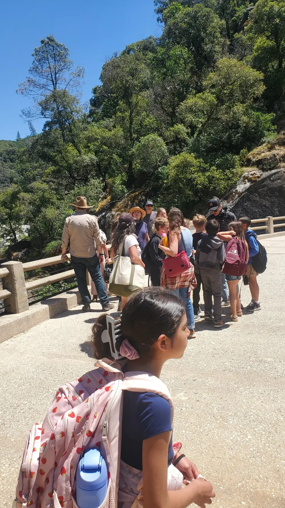
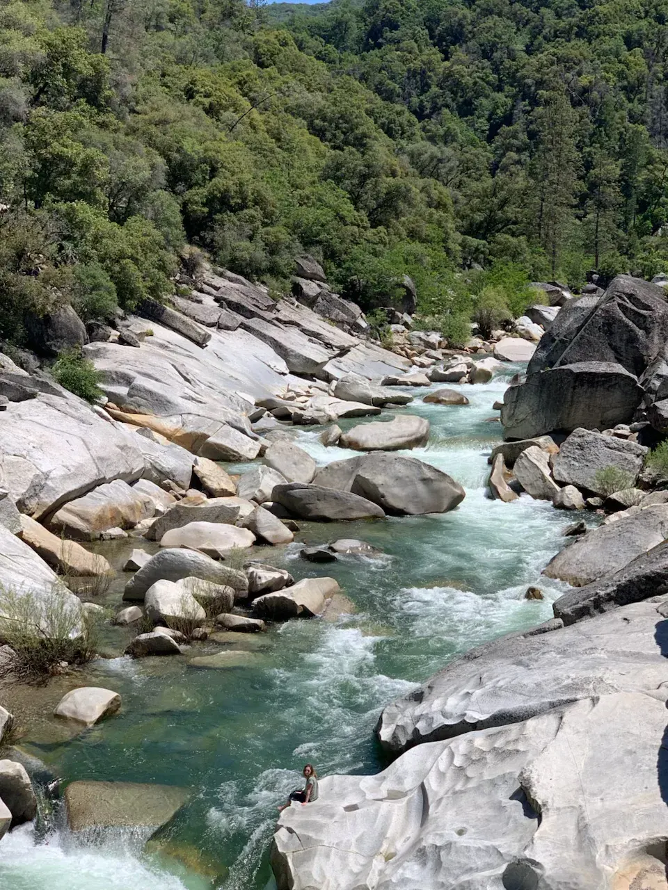

_result.webp)
_result.webp)
_result.webp)
_result.webp)
_result.webp)
_result.webp)
_result.webp)
Act II · Thursday Afternoon, May 14
Stand at the overlook and try to understand what you're looking at. The numbers help — but only a little.
On Thursday afternoon, after the town tour and the gold panning, the groups drove up to the Malakoff Diggings overlook. You step out of the car and there it is: a pit the size of a small city, carved entirely by water.
No dynamite brought these walls down. No shovels removed this earth. Water did this. Water under pressure, fired from iron nozzles, aimed at hillsides for eighteen years straight.
The Malakoff pit, 1866–1884
One part gold per twelve million parts of rock and dirt. The monitors washed fifty thousand tons of gravel every single day to find it.
Three men met in Sacramento in the spring of 1852 and decided to try their luck in the gold fields. None of them planned to change California forever. They were just trying to make a living.
Spring 1852
Anthony Chabot — an engineer — made a 100-foot hose from strips of saddlebag canvas while waiting for rains. His partner Eli Miller built a three-foot funnel. For the first time, they could bring water to the diggings instead of carrying excavated gravel to the water. Productivity jumped immediately.
Late 1852
Edward Matteson suggested attaching another funnel — turned around — to the discharge end of the hose. Miller fabricated a three-foot nozzle with an inch-and-a-half outlet. The pressure transformed. A hillside 500 feet away crumbled and washed into the sluice. Hydraulic mining was born.
1858–1876
Julius Poquillion bought 1,535 acres of abandoned claims. San Francisco investors backed the North Bloomfield Gravel Mining Company. They built 40 miles of ditches and flumes, a drain tunnel through a mile of bedrock, and deployed seven full-scale Craig monitors running 24 hours a day. The largest hydraulic mining operation in the world.
January 7, 1884
Judge Lorenzo Sawyer permanently enjoined the company from dumping tailings into the Yuba River. The monitors shut down. The first environmental ruling in United States history ended eighteen years of continuous operation. Read the full Town Hall story →
Gold panning worked. It was just slow. Every improvement that followed was invented for the same reason: move more gravel, find more gold, faster. Each step worked — and each step made the next problem bigger.
Swirl water in a shallow pan, pour off the light material, watch for color at the bottom. Precise. Backbreaking. One person, one pan, one claim.
A short sluice box that rocks. Feed gravel in one end, water washes through, gold catches on riffles at the bottom. Two or three miners working together.
A long wooden box with a continuous flow of water. Gravel shoveled in the top, gold trapped by wooden riffles along the bottom. Half as precise, sixteen times the volume.
A water cannon on a swivel, fed by 40 miles of ditches, firing at 500 PSI. One million gallons per hour. Entire hillsides dissolved and washed into sluices below. And then into the rivers.
A hydraulic monitor is only as powerful as the water behind it. The Malakoff operation needed an enormous, constant supply of water at high elevation — so they built an engineering system to match the scale of the mine.
The Bowman Ditch carried water 40 miles from the headwaters of the Yuba River at Bowman Reservoir to the mine. Every foot of elevation drop in an enclosed pipe creates roughly half a pound of pressure. By the time the water reached the monitors, it had built to 500 PSI — the same pressure as a modern industrial power washer, running continuously, from seven nozzles at once.
The ditch was built in 1869 by 800 Chinese workers and 300 white workers. Many of those original ditches and flumes were later purchased by PG&E to generate electricity. Some are still in use today.
The tailings didn't stay in the mountains.
The Yuba River had been a swift, clear mountain torrent. By 1868, its bed had been raised 50 feet above its 1849 level by sediment. It once had trout. By the 1870s, it was a turbid yellow-grey stream. Salmon ran up the Yuba, Feather, and American Rivers — until their spawning beds were buried. The fish became extinct in those rivers.
Tailings flowed downstream and spread across the Central Valley. 18,000 acres of fertile farmland were buried under feet of mining debris — sand, gravel, and grey slickens. Orchards, gardens, fields, and homes were swallowed. Farmers who had built their livelihoods there watched everything disappear under a creeping grey tide.
Marysville flooded catastrophically in 1875 — surrounded by levees, floodwaters filled the city like a bowl. Sacramento flooded repeatedly. The Sacramento River's navigable channel filled with silt. Governor Perkins warned in 1881 that entire cities would "at no distant date be rendered uninhabitable" if the debris wasn't stopped.
The slickens didn't stop at the valley. Fine sediment suspended in the rivers traveled all the way to San Francisco Bay, where it began silting up navigation channels. The impact of one mine in the Sierra Nevada was measurable 150 miles away in the ocean.
"Tornado, flood, earthquake and volcano combined could hardly make greater havoc, spread wider ruin and wreck, than are to be seen everywhere in the track of the larger gold-washing operations."
— Samuel Bowles, 1868
"The Yuba River was once, I am told by old residents, a swift and clear mountain torrent. It is now a turbid stream whose bed has been raised not less than fifty feet above its level in 1849. It once contained trout, but now I imagine a catfish would die in it."
— Charles Nordhoff, 1872
"By no other means does man more completely change the face of nature than by this process. Hills melt away and disappear under its influence, every winter's freshets carrying portions of the detritus to lower and yet lower points."
— Titus Cronise, 1868
Anthony Chabot and Edward Matteson invented hydraulic mining together in 1852. Their lives afterward went in opposite directions.
The canvas hose · San Francisco water systems
Left the gold fields in 1856. Created San Francisco's first regular water system (1858). Developed water systems for Portland and Milwaukee. Built the dam on San Leandro Creek — now Lake Chabot. Largely responsible for water systems in Oakland and San Jose.
Died a multimillionaire in 1888. Left over $85,000 to Bay Area charities. Chabot Observatory is named after him.
The nozzle · four follow-on inventions
Stayed in the gold fields. Invented four more devices — a hydraulic derrick for moving boulders, a steel bar platform for prying loose cemented materials, a device for keeping debris out of hydraulic intakes. Never sought patent rights for any of it.
Died a poor man in Nevada City in 1903. His gravesite is still unknown.
The Malakoff pit sits within the territory of the Hill Nisenan. Their territory once extended from the lower Yuba, American, and Feather Rivers east to the Sierra crest. They lived in multi-family villages below 3,000 feet, spreading to high camps in spring and summer to hunt and gather food.
First contact with Spanish in 1808. The malaria epidemic of 1833 killed many. The Gold Rush delivered the final blow — miners overran their territory, brought disease, and disrupted the harvest patterns the Nisenan had maintained for generations. The mine that became Malakoff was built on land that had belonged to them.
During and after the Gold Rush, bounty hunting was sanctioned by the California Legislature — $100 per person killed, organized militias of local merchants and ranchers. Children were taken by force to boarding schools where speaking their language resulted in beatings, isolation, and withholding of food.
"You know how I was raised? In a boarding school, being slapped across the face, beaten for being an Indian, feeling ashamed of the color of my skin." — Unidentified Yurok elder
The Sawyer Decision of 1884 protected the rivers and the farms. There was no analogous ruling protecting the Nisenan. The surviving Nisenan — known as the Southern Maidu in Nevada County — are still seeking federal tribal recognition.

